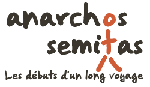

Un voyage, 9 mois de découvertes, 4000 km à pied.
Sortie le 2 avril
Libre Lecture
Prix Libre
Découvrez chaque jour, durant deux mois, les nouvelles pages du « journal de bord » de deux jeunes voyageurs en Afrique. À travers Maroc, Mauritanie, Sénégal et Mali, plongez dans leur quotidien, avec un regard féminin, celui de Marie.
Grâce aux possibilités du web, chaque texte sera enrichi – pour stimuler l'imaginaire et forcer l'immersion – de photos, sons, dessins, cartes, vidéos, ainsi que d'une version audio. Pour aller plus loin, des notes et liens encyclopédiques ponctueront les paragraphes.
L'accès à ce livre web restera entièrement ouvert. Ni code d'accès ni besoin de payer, pour pouvoir consulter, chaque jour, l'ensemble des textes. Vos mouvements de lecteur seront et resteront libres !
Et même plus ! Sauf mentions contraires, l'œuvre sera libre de droit (placée sous licence libre CC0). Ainsi, vous pourrez consulter, partager, modifier et réutiliser tout ou partie de son contenu.
Cette œuvre sera libre, mais pas gratuite ! Son prix ? Une critique, un merci, un encouragement, une bière, une crêpe party, quelques euros ou même beaucoup. À vous de choisir : en fonction de vos possibilités, de ce qui vous semblera juste, des émotions reçues, du plaisir perçu, etc.
Non, ce choix n'est pas utopique. Il est idéologique. Nous croyons que la rémunération d'une œuvre, d'un travail créatif, ne doit pas être un acte forcé (comme c'est la norme), mais une démarche volontaire et positive. Par notre travail, nous cherchons à donner du plaisir, à créer des émotions, à faire découvrir, à susciter des interrogations, etc. Et nous rêvons d'être soutenu pour cela. Que l'on passe du « payer pour pouvoir lire » au « payer pour remercier ».
Et, chuuut, on vous le dit dans l'oreille : « Plein de créateurs ont déjà fait ce choix. »
Nous sommes Marie et Mathieu, deux jeunes amoureux du voyage, mais pas n'importe lequel. Celui qui est long, lent, précaire, fait de petits bouts de ficelle, de rencontres populaires, d'échanges culturels, d'immersion en pleine nature.
Les émotions que l'on y gagne, nous aimons les restituer et les partager, par l'écriture, le dessin, la parole, les images, etc. L'exercice n'est pas facile. Nous espérons, alors, que ce livre web sera à la hauteur du voyage qu'il raconte.
Retrouvez-nous sur anarchos-semitas.net,
notre site web de voyage, de bric et de broc.
Ou contactez-nous à contact@anarchos-semitas.net
